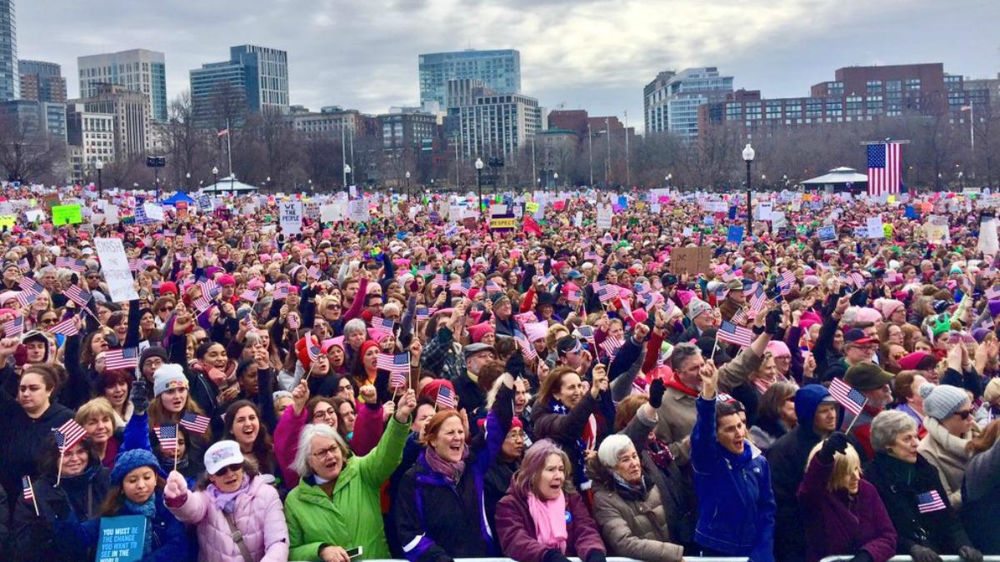
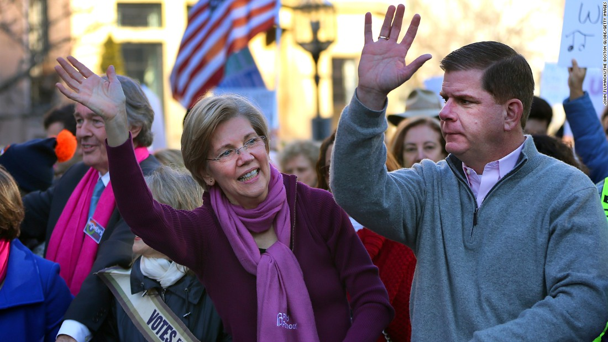

The Women's March was a worldwide protest on January 21, 2017, to advocate legislation and policies regarding human rights and other issues, including women's rights, immigration reform, healthcare reform, the natural environment, LGBTQ rights, racial equality, freedom of religion, and workers' rights.
It was the largest single-day demonstration in U.S. histoy.

About
The first planned protest was in Washington, D.C., and is known as the Women's March on Washington. According to organizers it was meant to "send a bold message to our new administration on their first day in office, and to the world that women's rights are human rights."
Organizors
On November 9, 2016, the day after Donald Trump was elected President of the United States, in reaction to Trump's election campaign and political views, Teresa Shook of Hawaii created a Facebook event and invited friends to march on Washington in protest

Partnerships
In late December, organizers announced that over 100 organizations would provide assistance during the march and support the event across their social media platforms. By January 18, more than 400 organizations were listed as "partners" on the March's official website.
Planned Parenthood (which has received federal funding since 1970, when President Richard Nixon signed into law the Family Planning Services and Population Research Act) and the Natural Resources Defense Council were listed as the two "premier partners". Other organizations listed as partners included the AFL–CIO, Amnesty International USA, the Mothers of the Movement, the National Center for Lesbian Rights, the National Organization for Women, MoveOn.org, Human Rights Watch, Code Pink, Black Girls Rock!, the NAACP, the American Indian Movement, Emily's List, Oxfam, Greenpeace USA, and the League of Women Voters
International
Marches occurred worldwide, with 168 in 81 other countries. Organisers of the event reported 673 marches worldwide, including 20 in Mexico and 29 in Canada. Women in India also organized a nation-wide march on January 21, 2017 called I Will Go Out to demand women's right to safe public spaces


.jpg)